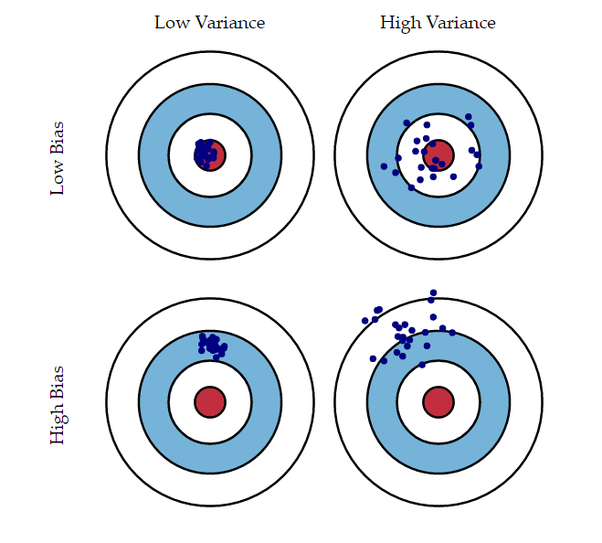
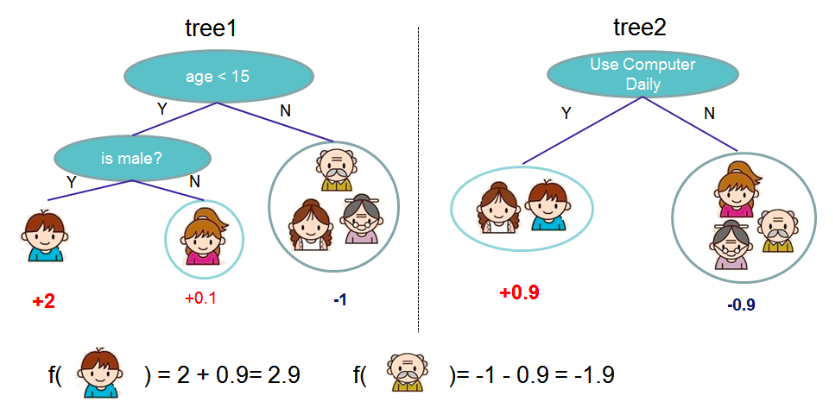

Using Machine Learning to Impute
Vinayak Anand-Kumar
Introduction
What we will cover?
Imputation
What is imputation?
Why is imputation important?

Machine Learning
What is Machine Learning?
Why use Machine Learning?
My Machine Learning method
Decision Trees
Lots of Decision Trees

How did it perform?
Lessons
Future direction
The Academy